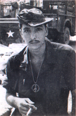

Home

- Click below to read a story -
| Lt. Gary Miller • NewsWeek Article • Robert A Gruen • Richard Carpenter |
| Richard Smith • Vet Reunion |
|
The Day As I Saw It
By Robert A. Gruen It was September 12th, 1968 – we woke up in our base camp at Quan Loi. The first thing I remember that day, was sitting on our gear at the air strip. All the older guys were taking pictures of each other, and I asked them what they were doing. They said that they were taking the last pictures, because we're going to a bad place. We are going
to Loc Ninh, and not all of us are coming home. I had only been in the country since July and was
still one of the newer guys. I was talking to Marion Oxner who got to the company the same time I did,
we went to the jungle devil school together. We figured that they were only trying to scare us again.
Also we had both finally gotten off ammo within one week. |

Robert A. Gruen - 1968 |
|
I think it was Ssg. Baker who came out and said "Gruen you're on ammo again!" I said "oh hell I just got off that shit." Marion said "I'll take it Gruen, no big deal." Then Ssg. Baker came out again and said "Gruen you're on ammo again, this time you'll be assisstant gunner for Louie Lorenze, who will be walking point for Mike 3, in the right file." Mike 2, my squad, had right flank. I said "thanks Marion, now we are both back on this shit again." After that we started talking about last pictures, an extra gun in each squad, and what the hell is an M-60 doing on point? That's when we figured that it was a bad place. I learned that day that the only time a gun walked point, we knew we were walking into the shit. We boarded one of those airplanes that the back opened to a ramp. I think they were called Carabau. We landed at Loc Ninh air strip, saddled up, formed up, and moved out. I thought we were going to sweep around the air strip and be back inside the wire by supper time because we only had one meal of "c's" and only enough water for one day. We started walking, it was in unworked rubber (heavy brush between the trees). I remember seeing an old junk school bus on the left side, and wondered how the gooks got that thing there. We walked about another half a click when an N.V.A. popped out from behind a rubber tree to our front right, took a couple of shots at us, then jumped back behind the tree. It was so fast, Louie and I didn't even get off a shot. We started moving again and this time Louie got to fire at him. He told me to watch the front and my starter belt, and I told him that I was already doing that, and I was ready to hook up. Then the gook did it again, still to our front right. I think we were starting to turn the company to the right (which I believe is what the gook wanted) but our CO, Alpha 6, (Ed Knoll) figured out what the gooks were doing and stopped the company. He said send out your clover leaves Mike and (I think) November. Mike 2 was on the right flank so they started out. They were just to the farthest point ready to circle back to rejoin up from the rear when they got hit, there was a lot of firing, it only lasted a couple of minutes but to me it seemed to last an hour. That was my squad my family and they were down. Alpha 6 gave orders to form a perimeter and get your claymores out. We were ready within five minutes. Then Mike 6, Bill Cowan, and Mike's platoon leader said that we (Mike 3) were going to try to get Mike 2 to get them back in. We started walking out but the fire was too heavy and we got pushed back. We tried again but were again pushed back. It was still late morning I think. We all knew that there were a lot of gooks out there. (Later I had heard that we, Alpha Co., Almost walked into a regimental u-shaped ambush but thanks to Alpha 6 we didn't get into it). We laid there watching, waiting, and returning fire almost all afternoon, our perimeter was fairly small, we were only company size. I could hear Alpha 6 trying to get support and giving someone hell on the horn because we couldn't get morters, arty, gun ships, jets, or anything. Then it started to rain. I think that was the only time it was ever cold over there. I was laying in a puddle and coudn't move because I had to be right next to Louie's gun. The rain stopped and the ground dried out (about as much as it always did). Then we heard a lot of firing by Mike 2's position, I remember seeing smoke out there, yellow and green, and I thought, what the hell is going on? Then I knew what that meant. Those fucking gooks – we were pissed. Finally, late in the afternoon Sgt. Parker who was a rubber tree behind us said the cav. is a click away and moving in. Thank god! We were very low on ammo, food, and water. Louie said "Gruen get down as low as you can get because the shit is really going to hit the fan now" and boy it sure did. The shit was everywhere the cav. With the fifties and sixties, and I couldn't believe the way they threw frags. Us firing and the gooks were hitting us with everything they had. RPGs were going off like popcorn. I heard shrapenel coming in and, pow, it hit Louie right in the front of his steel pot and blew out the back of it. Louie looked at me with a look like, what the hell was that. Then the blood rolled over his head band and rolled down his face. After that I remembered my training and said Louie, your hit, but don't worry, it doesn't look bad. I turned to Sgt. Parker and yelled "Sgt. Parker get a medic Louie's hit bad!" Louie got dusted off later and was ok. The cav. surrounded us and backed in between our positions. Then Mike 6 said "ok Mike 3, we are going to go out to get Mike 2 and bring them back. Sgt. Kinser is going to talk to you before we go out." I'll never forget what he said, "We are going to Mike 2. They are all dead. We are going to pick them up, put them in the tracks, and come back. Do not get mad. Do not lose your head, stay cool, just do your job and get back, and above all do not get in front of the tracks." So we started out Mike 3 and 3 a.p.c.'s. Again the gooks were firing at us and the cav., Mostly AKs and RPGs. When we were almost to them someone called out to us "help me!" We stopped dead in our tracks, Sgt. Kinser asked who it was. The reply came back, Bernie Steadman. We broke the first rule, Mike 3 took off to get them. Bernie was wounded, so was Mike 2 gunner, Doug (I cant remember Doug's last name). Then came a long night. Those gooks just kept it up with RPGs. Now every time I hear the star-spangled banner I remember that night because when they are launched they have a red blast and they were blowing up in the trees above us all night hence "the rockets red glare, the bombs bursting in air." We spent a week there, we got into a fight everyday that week. We came in for a day or two then went back again for another week. By the end of the day, seven very good men were dead. They were platoon Sgt. Ssg. Phillip K. Baker, squad leader Sgt. Michael R. Baldwin, Pfc. Eugene R. Boyce (it was his first day in the field), Pfc. Dale A. Palm, Kurt F. Ponata, Sp4 J.C. Williams Jr., And my friend Marion L. Oxner. My name is Bob Gruen and I would like to dedicate this story to Mike 2 – a group of very good soldiers. At the time this happened I was only 20 years old, as were most of Mike 2, we were not even old enough to vote or buy a drink in a bar. Mike 2 is together on Plack 44W on the Vietnam Wall. |
|